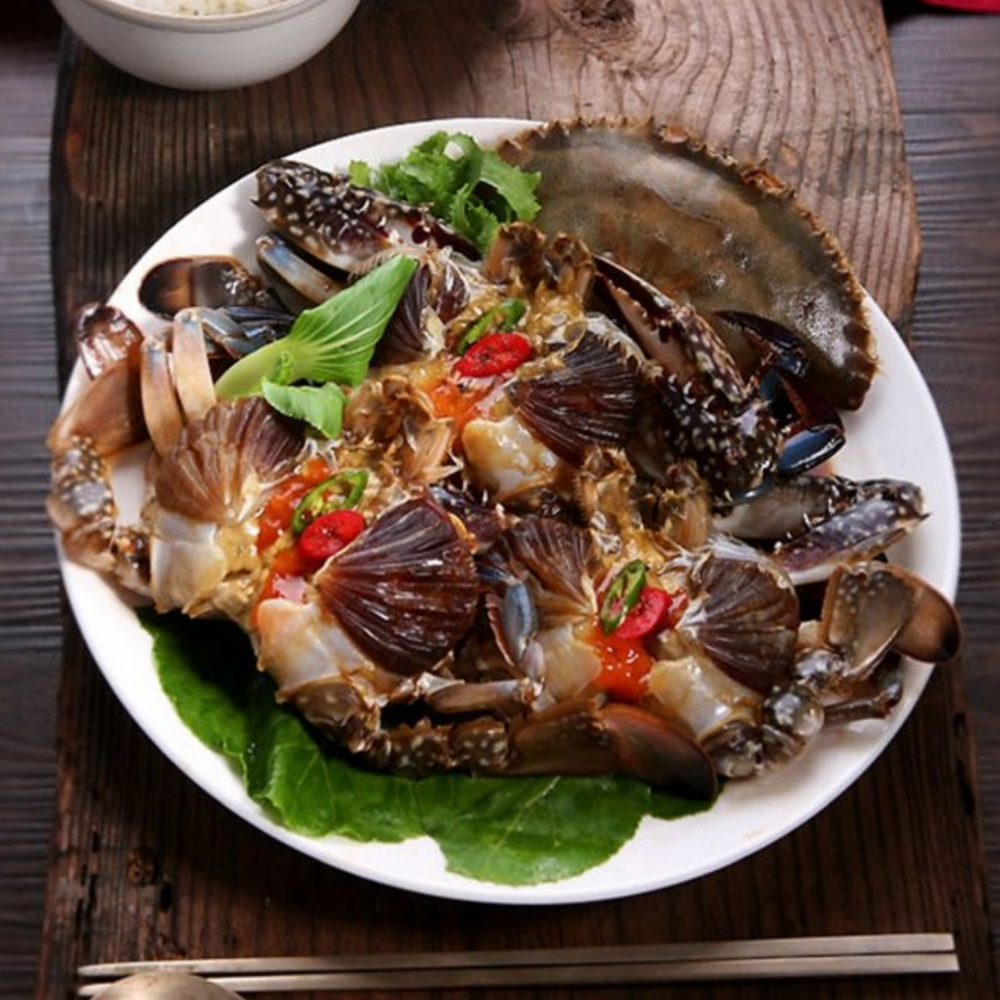

꽃게가 간장 속에
반쯤 몸을 담그고 엎드려 있다
등판에 간장이 울컥울컥 쏟아질 때
꽃게는 뱃속의 알을 껴안으려고
꿈틀거리다가 더 낮게
더 바닥 쪽으로 웅크렸으리라
버둥거렸으리라 버둥거리다가
어찌할 수 없어서
살 속으로 스며드는 것을
한때의 어스름을
꽃게는 천천히 받아들였으리라
껍질이 먹먹해지기 전에
가만히 알들에게 말했으리라
저녁이야
불 끄고 잘 시간이야